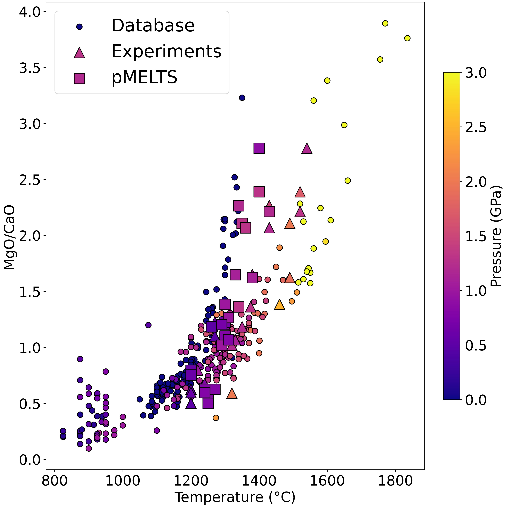

How we used pMELTS
How pMELTS works
The problem
Our Solution
Data Processing
The database
A tool in the shed
pMELTS, just like with Perple_X and MAGPOX, their use it is often considered a challenge, if not of as a full project, due to their steep learning curve and difficulties of use. We believe that this needs to change, these programs are incredible tools with an even more incredible potential, and great people went through a titanic effort over decades so that we could have a chance to use them. If we remove their difficulties of use and unify the way we interface to them, we can provide an environment where they can be combined in any way possible with other types of tools to expand their use to as far as creativity can go.
They way I like to think of it is that the 3 programs are equivalent to three hammers of different sizes, designed to hit similar nails but on different contexts. What we have done here is essentially turn these hammers into nail guns, and if we combine them with a woodcutter we will be able to build anything between a chair and a house. How many tools you think we can fit in our shed? What would you like to build? I assure you, it can be done if we keep working on this.
Code and data availability
Data will not be made available until publication.
Code will not be shared on this occasion due to the lack of documentation and the overall state of the code which makes it difficult to follow. It will be available in a fully documented form at the time of publication. If you wish to make use or still wish to see the code, please contact me at daniel.astudillo@ufl.edu.